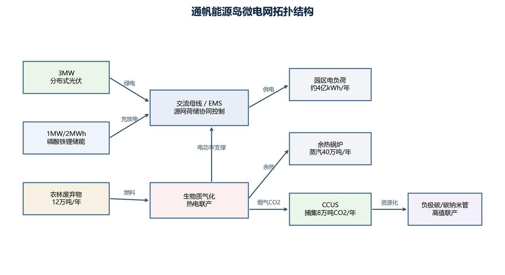
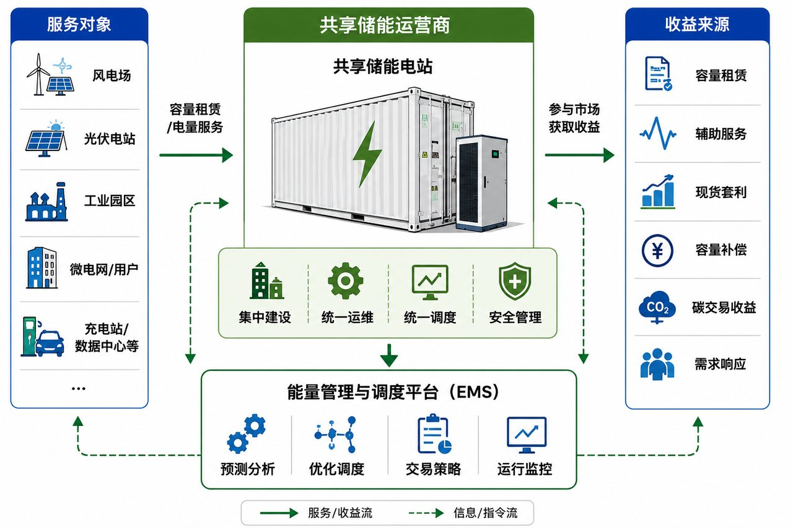
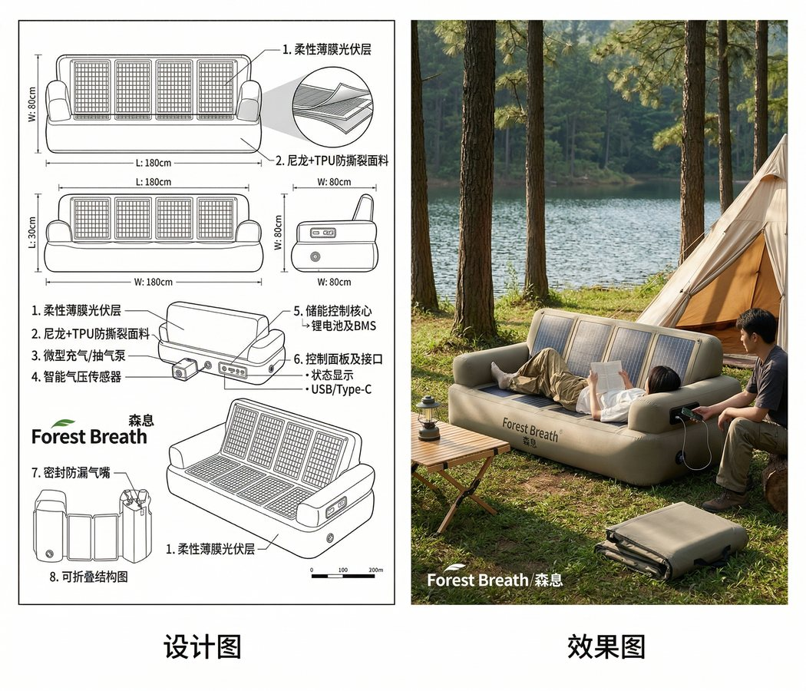

基础层
高等数学、大学物理、电路、数电、模电、工程图学、信号与系统。
New Energy Guide
这一页来自 01课程/02新能源科学与工程 文件夹中的培养方案、课程体系和课程成果。
它不做课本搬运，而是把专业学习路线翻译成普通读者也能看懂的科普：新能源不是“发电方式清单”，
而是一套从能量转化、装备控制到场站并网和系统运行的工程体系。
Training Logic
培养方案把专业主线概括为三件事：新能源高效洁净转化与利用、新能源装备与系统控制及智能化、 新能源场站接入系统运行。换成白话，就是“怎么发出来、怎么控得住、怎么接进电网并稳定运行”。
高等数学、大学物理、电路、数电、模电、工程图学、信号与系统。
电机学、电力电子、自动控制、现代控制，让设备能变换、驱动和响应。
太阳能发电、风力发电、储能技术，把自然能量转成可用电能。
新能源电力系统分析、分布式发电与微电网、场站电气工程。
统计建模、人工智能、SCADA 数据分析、先进控制和智能运维。
Knowledge Cards
光伏电池把光能转成电能，但输出会受光照强度、温度、组件连接方式和逆变控制影响。 课程中的光伏电池 MATLAB 仿真、离并网光伏系统设计和“森息”太阳能创意设计，都在回答同一个问题： 怎样让不稳定的自然光变成稳定、可管理、可并网的电。
风机要面对空气动力学、风切变、塔影效应、变流器、并网控制和安全保护。 文件夹中的风切变实验、风电机组优化控制和 SCADA 数据分析，把“风资源”转化为“可预测、可调度”的工程数据。
风和光都有波动，储能的作用是把“发电”和“用电”之间的时间差补起来。 共享储能进一步把储能从单个电站自用，扩展为多个主体共同租用、调峰、套利和提升新能源消纳的公共资源。
微电网通常包含光伏、风电、储能、负荷、控制器和并网接口。它可以并网运行，也可以在特殊场景下孤岛运行。 “通帆能源岛”课程成果展示的正是这种系统思维：既看能量流，也看碳排放、经济性和调度策略。
光伏输出直流电，风电频率会随转速变化，而电网需要稳定的交流电。 DC-DC、逆变器、整流器、SPWM 等电力电子技术，负责把不同形态的电能转换成电网和负荷能用的形式。
自动控制、现代控制和新能源装备先进控制，解决的是响应速度、稳定性、抗扰动和优化运行问题。 当传感器、SCADA、统计建模和人工智能加入后，新能源系统就能从“能运行”走向“会诊断、会预测、会优化”。
Core Courses
理解发电、输电、负荷和潮流计算，把单个设备放进电力系统里分析。
掌握整流、逆变、斩波和变流，是风光储接入电网的关键接口。
从风资源、空气动力学、风机结构到控制策略和并网运行。
从光伏电池特性、阵列优化到离并网系统设计和功率变换。
理解电化学储能、共享储能、调峰调频和新能源消纳。
新能源工程不只追求效率，也要考虑安全、责任、法规和可持续发展。
Course Works
下面三张图来自课程文件夹里的公开展示型成果。它们让这页科普不只是文字，也能看到新能源工程怎么从概念走到系统。



Common Questions
不止。新能源工程还包括储能、并网、电力电子、控制、场站设计、系统调度和智能运维。
装机多不等于系统好。关键是能不能消纳、能不能稳定运行、能不能在经济和安全之间平衡。
储能既是设备，也是市场和调度资源。它可以削峰填谷、平滑波动、参与辅助服务。
它小，但功能完整。微电网能把分布式能源、储能和负荷组织起来，适合园区、海岛、乡村和应急场景。
它可以做故障识别、功率预测、图像缺陷检测、运行优化和运维决策辅助。
新能源项目会影响环境、安全、土地、社区和经济收益，工程师必须理解技术选择背后的责任。
Related
这页是个人主页里的新能源科普入口，背后连接课程学习、竞赛项目和未来作品集。